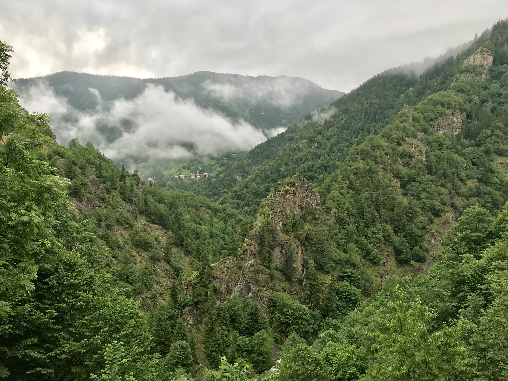
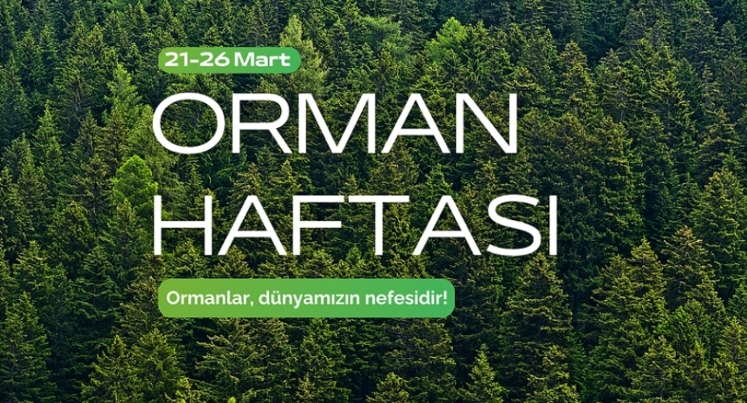
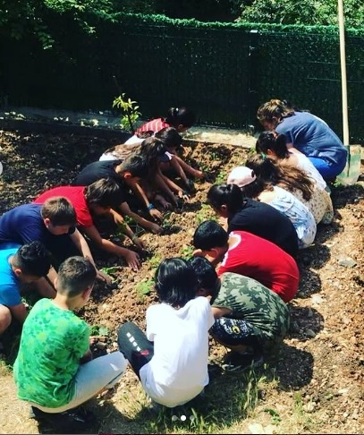

Orman Haftasının Tarihi
-

Ormanlar, Dünya'da yaşamın belki de en önemli parçasıdır. Hayvanlar açlığını burada yatıştırır, burada barınır. İnsanlarda kaynaklarını ormanlardan alır, ve en önemli yaşama kaynağımız Oksijenin büyük bir kısmını ormanlardan alırız.
-
Orman Haftası, Türkiye'de okullarda 21 - 26 Mart tarihleri arasında kutlanan bir haftadır. Orman haftası ve ağaç bayramı olarak da adlandırılır. Amacı çocuklara ormanların önemini öğretmektir. Hafta boyunca fidan dikilir ve ağaç ile ormanların doğa ve ekonomiye katkıları anlatılır.

-
1971 yılında Avrupa Tarım Federasyonu (CEA); 21 Mart gününü Kuzey yarım küresinde ilkbaharın, Güney yarım küresinde de sonbaharın başlangıç günü olarak kabul etmiş ve Birleşmiş Milletler Gıda Örgütü (FAO) kanalı ile bunun bütün dünya ülkelerine tavsiye edilmesini sağlamıştır. O günden bu yana 21 Mart, " Dünya Ormancılık Günü", 21 Martı içerisine alan hafta da "Orman Haftası" olarak kutlamaya başlanmıştır. Türkiye ise Dünya Ormancılık Gününü ilk defa 1975 yılında kutlamıştır. Ayrıca ülkemizde 21-26 Mart tarihleri arasında Orman Haftası kutlanır ve bu haftanın bir günü Ağaç Bayramı olarak kabul edilir ve uygun alanlar ağaçlandırılır.Ormanlar, doğanın kalbidir ve yaşam için vazgeçilmezdir. İnsanlık için oksijen üretir, iklimi dengeler, biyoçeşitliliği korur ve su döngüsünü düzenler. Aynı zamanda ormanlar, yerel halklara yaşam kaynağı sunar ve dünya ekonomisine önemli katkılarda bulunur.
-
